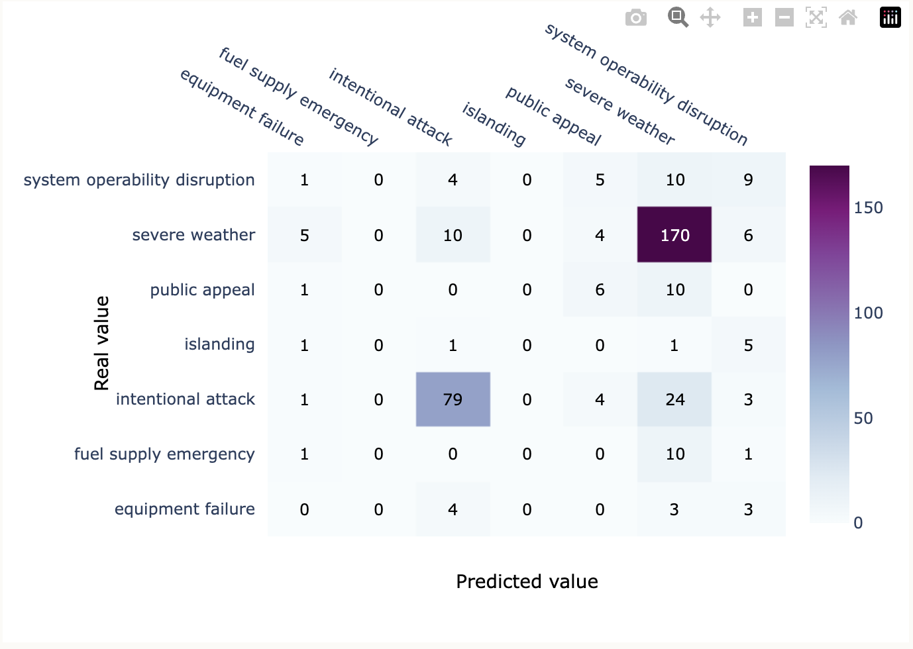

A multi-class classifier that predicts the underlying cause of a severe U.S. power outage — severe weather, intentional attack, equipment failure, fuel supply emergency, and so on — from event metadata. The motivation is operational: if repair crews know the likely cause before they arrive on scene, they can prepare for the right kind of damage.
Data
The dataset comes from the U.S. Department of Energy's Office of Electricity Delivery and Energy Reliability and the U.S. Energy Information Administration — 1,534 outage events. I narrowed the original 55 columns down to the 6 (+1 engineered) that matter for cause prediction:
CAUSE.CATEGORY— the response variable (multiclass).CLIMATE.REGION— outage location's climate region.ANOMALY.LEVEL— Oceanic Niño Index (ONI) anomaly tied to El Niño / La Niña.OUTAGE.DURATION— duration in minutes.CUSTOMERS.AFFECTED— number of affected customers.POSTAL.CODE— state.CLIMATE.CATEGORY— warm / normal / cold relative to ONI.
Cleaning
Two of the columns had non-trivial missingness:
OUTAGE.DURATION— missingness was statistically dependent onCAUSE.CATEGORY(p ≈ 0.002), so I imputed with the per-cause mean rather than the global mean.CUSTOMERS.AFFECTED— same dependency pattern (p ≈ 0), same per-cause imputation.ANOMALY.LEVEL— 9 missing rows with no detectable dependency on cause or region; dropped.
The "missingness depends on the target" pattern was important. Naive imputation (global mean) would have leaked information from one class into another and made the validation accuracy look better than it actually was.
Modeling
I evaluated with accuracy (rather than F1) since this is a multiclass classification problem with no specific class to favor.
A baseline decision tree got me close, and grid search over max_depth, min_samples_split, and the splitting criterion via 5-fold cross-validation pushed validation accuracy up by 2.4 points. The tuned model reached 82.7% accuracy on the held-out test set.

Built as part of a UC San Diego data-science methods course. Repo: github.com/gabrielchasukjin/Power-Outage-Classification-Model.